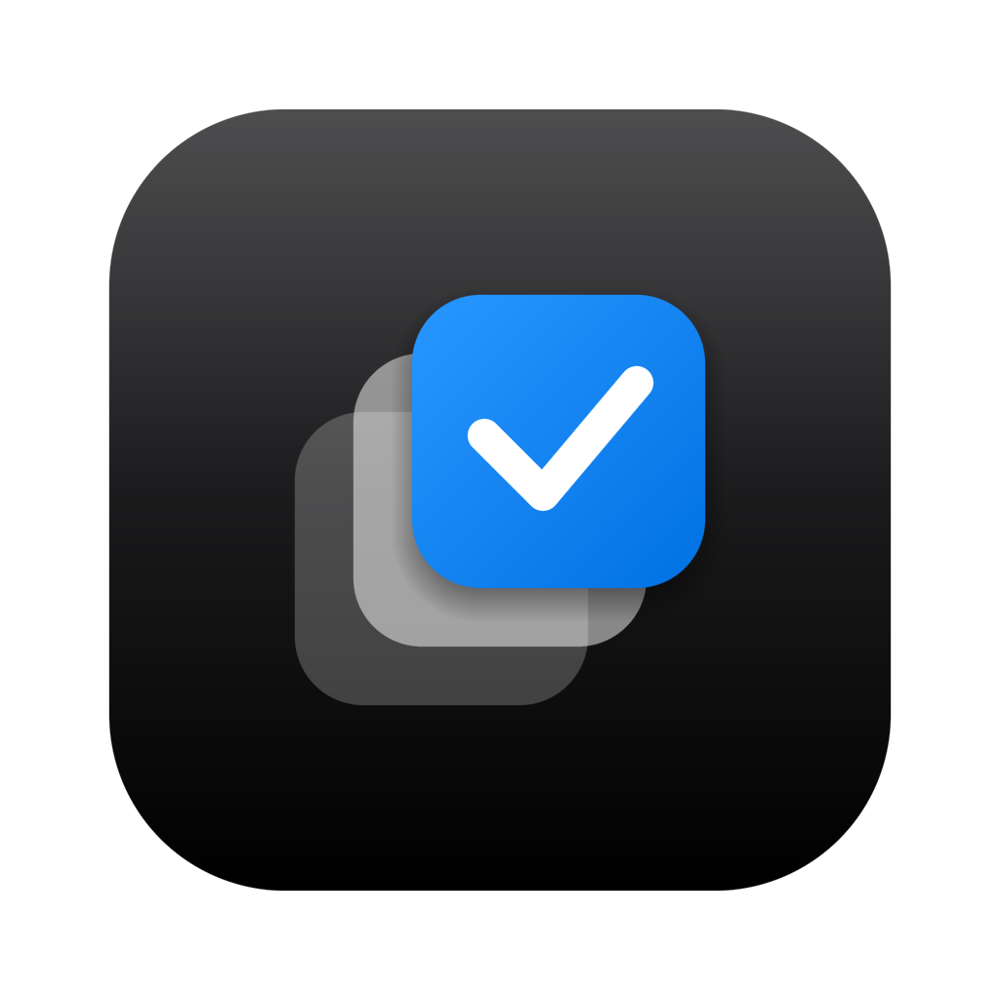

扫描
自动扫描主目录启动时自动扫描主目录中的 Agent Skill 文件夹
显示
数据
Skill 索引仅保存元数据，不保存 Skill 内容
导出诊断报告自动脱敏路径与用户名
已授权目录
用户主目录仅访问 Agent 注册表白名单内的固定路径，不递归扫描
~
已授权
SkillSelector~/Project/SkillSelector
项目
自定义 Agent 目录
我的 Agent~/my-agent/skills · 入口文件 SKILL.md
将任意本地 Skill 目录登记为一个自定义 Agent

版本 0.1.0 · Universal 2（Apple Silicon + Intel）
本机 Agent Skill 的查看与修改工具。不是市场，不是安装器，不是 AI 工具。
隐私离线运行 · 无遥测 · 无崩溃报告 · 删除仅走回收站
签名Ad-hoc 签名 · 已启用 App Sandbox · 未经 Apple 公证
SkillSelector 仅管理已存在的本地 Skill。
© 2026 SkillSelector Contributors · Apache License 2.0